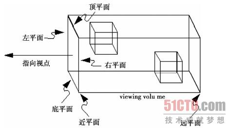

1、 认识相机
在Threejs中相机的表示是THREE.Camera，它是相机的抽象基类， 其子类有两种相机，分别是正投影相机THREE.OrthographicCamera和透视投影相机THREE.PerspectiveCamera。
正投影和透视投影的区别是：透视投影有一个基本点，就是远处的物体比近处的物体小; 正投影的特点是，远近高低比例都相同。
2、 正投影相机
下面我们来介绍正投影相机，正投影的构造函数如下所示：
OrthographicCamera( left, right, top, bottom, near, far )
结合下面一个图，我们来看看，各个参数的意思。

有了这些参数和相机中心点，我们这里将相机的中心点又定义为相机的位置。通过这些参数，我们就能够在三维空间中唯一的确定上图的一个长方体。这个长方体也叫做视景体。
投影变换的目的就是定义一个视景体，使得视景体外多余的部分裁剪掉，最终图像只是视景体内的有关部分。
好了，看一个简单的例子：
var camera = new THREE.OrthographicCamera( width / - 2, width / 2, height / 2, height / - 2, 1, 1000 );
scene.add( camera );
这个例子将浏览器窗口的宽度和高度作为了视景体的高度和宽度，相机正好在窗口的中心点上。 这也是我们一般的设置方法，基本上为了方便，我们不会设置其他的值。
3、透视投影相机
透视投影是更符合我们视觉的投影，所以在各种应用中运用非常广泛。透视投影相机的构造函数如下所示：
PerspectiveCamera( fov, aspect, near, far )
fov: 视角
aspect：纵横比
near：近平面
far： 远平面
下面一个简单的例子：
var camera = new THREE.PerspectiveCamera( 45, width / height, 1, 1000 );
scene.add( camera );